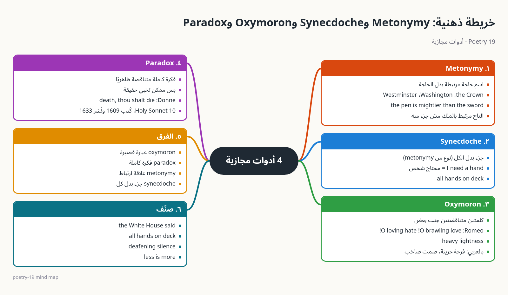

آداب الإنجليزية
: قواعد وجرامر وشعر وأساطير
⭐
0
🔥
استمر!
📖
الدرس ١٩: metonymy و synecdoche و oxymoron و paradox
🎭
📊
المستوى: A1
الدرس 19 من 27
📖
كورس الشعر
📄 حمّل PDF الدرس
🎧 حمّل تسجيل الدرس كامل (MP3 · 3 MB)
📝 ملخص الدرس (عربي) PDF
📝 Lesson Summary (English) PDF
🧠 الخريطة الذهنية PDF
🧠 شوف الخريطة الذهنية للدرس

→
الدرس اللي قبله
كل دروس الكورس
الدرس اللي بعده
←